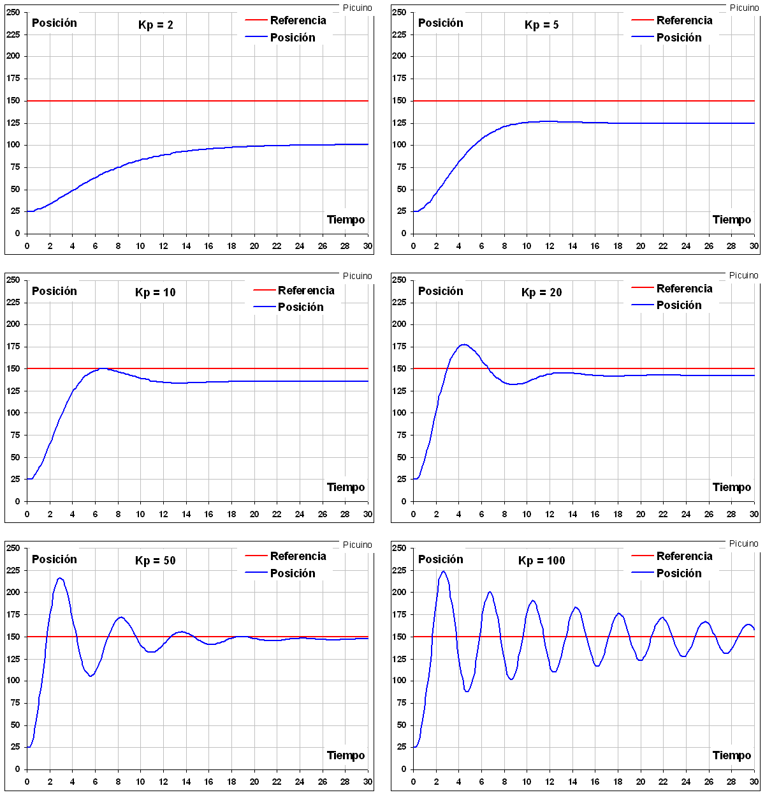
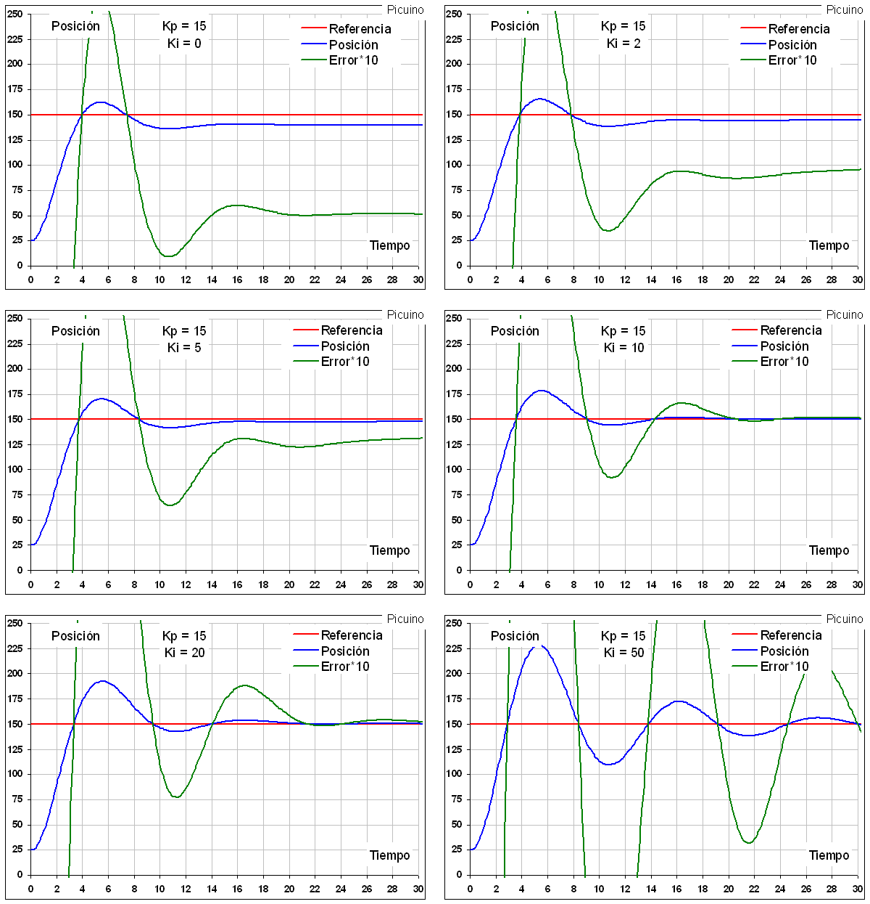

PID controller¶
A PID controller or regulator is a device that allows a closed-loop system to be controlled so that it reaches the desired output state. The PID controller is composed of three elements that provide Proportional, Integral and Derivative action. These three actions are what give the PID controller its name.

Reference signal and error signal¶
The signal r(t) is called reference and indicates the desired state to be achieved at the output of the system y(t).
The letter t inside the parentheses means that the signals change with time (t), that is, they do not remain with the same value.
In a temperature control system, the reference r(t) will be the desired temperature and the output y(t) will be the actual temperature of the controlled system, which will change with time.
As can be seen in the diagram above, the input to the PID controller is the error signal e(t). This signal indicates to the controller the difference that exists between the state to be achieved or reference r(t) and the real state of the system measured by the sensor, signal h(t).
If the error signal is large, it means that the state of the system is far from the desired reference state. If, on the other hand, the error is small, it means that the system has reached the desired state.
Control Action Proportional¶
As its name indicates, this control action is proportional to the error signal e(t). Internally the proportional action multiplies the error signal by a constant Kp which determines the amount of proportional action the controller will have.
This control action attempts to minimize system error. When the error is large, the control action is large and tends to minimize this error.
Increasing the proportional action Kp has the following effects:
- Increases the response speed of the system.
- Decreases the system error in permanent regime.
- Increases system instability.
The first two effects are positive and desirable. The last effect is negative and you have to try to reduce it. By increasing the proportional action there is a balance point where sufficient system response speed and error reduction are achieved, without making the system too unstable. Increasing the proportional action beyond this point will produce undesirable instability. Reducing the proportional action will reduce the response speed of the system and increase its permanent error.
{kind=link}
In the graphs above you can see the effect of progressively increasing the proportional action in a position control.
- With a small proportional action Kp=2, the system is slow, taking 20 seconds to reach the desired position, and the position error is large, 50 millimeters. As the proportional action is increased, the error decreases and the response speed increases.
- With a proportional gain Kp=20 the system is faster, taking 12 seconds to establish the permanent position. Likewise, the error has been reduced to a tenth, only 5 millimeters. You can also see an overshoot in the response, and the beginning of some instability.
- With higher gains, the permanent error can be further reduced, but the response speed does not increase because the system becomes so unstable that the position takes a long time to establish itself in its final state.
In this example the proportional action has been scaled so that its values are between 0 and 100.
At this point, it can be seen that proportional action cannot further improve system response. The best option with Kp=20 presents an overpulse of about 30 millimeters and a permanent error of 5 millimeters. If you want to improve this response, you must incorporate another type of control. This is where derivative control can help improve system response.
Derivative control action¶
As its name indicates, this control action is proportional to the derivative of the error signal e(t) multiplied by the constant Kd. The derivative of the error is another way of calling the "speed" of the error. It will be seen below why it is so important to calculate this velocity. In the above graphs, when the position is below 150mm, the proportional control action always tries to increase the position. The problem comes when taking into account the inertia. When the system moves at a high speed towards the reference point, the system will pass by due to its inertia. This produces an overshoot and oscillations around the reference. To avoid this problem, the controller must recognize the speed at which the system is approaching the reference so that it can slow it down in advance as it approaches the desired reference and prevent it from exceeding it.
Increasing the derivative control constant Kd has the following effects:
- Increases the stability of the controlled system.
- It slows down the system a bit.
- The steady state error will remain the same.
This control action will therefore serve to stabilize a response that oscillates too much.

In the previous graphs it can be seen how, by increasing the derivative action Kd, it is possible to reduce the oscillations to the point that they disappear for Kd=50. It can also be seen how the response slows down a bit as the derivative constant increases. With Kd=0 the system takes 1.8 seconds to rise to the reference value. With Kd=20 the system takes 2 seconds to rise to the reference value. In this example the derivative action has been scaled so that its values are between 0 and 100.
One problem with derivative control is that it amplifies rapidly varying signals, such as high-frequency noise. Due to this effect, the noise of the error signal appears amplified in the drive of the plant. In order to reduce this effect, it is necessary to reduce the noise of the error signal by means of a low-pass filter before applying it to the derivative term. With this filter the derivative action is limited, so it is desirable to reduce the noise of the error signal by other means before resorting to a low pass filter.
At this point, the system is fast and stable, but still has a small steady state error. This means that the actual position of the system is not exactly the desired position. In order to reduce this error, the third action of the PID controller is used, the Integral control.
Comprehensive control action¶
This control action, as the name suggests, calculates the integral of the error signal e(t) and multiplies it by the constant Ki. The integral can be seen as the sum or accumulation of the error signal. As time goes by, small errors add up to make the integral action bigger and bigger. With this it is possible to reduce the error of the system in permanent regime. The disadvantage of using the integral action is that it adds some inertia to the system and therefore makes it more unstable.
Increasing the integral action Ki has the following effects:
- Decreases the system error in permanent regime.
- Increases system instability.
- It slightly increases the speed of the system.
This control action will serve to reduce the error in steady state.
{kind=link}
An enlarged error signal, colored green, has been added to the above graphs to better appreciate how the error decreases as the integral action increases. Another visible effect is the increased instability of the system as Ki increases. For this reason, integral control is often combined with derivative control to avoid system oscillations.
Manual tuning of a PID controller¶
After seeing the different proportional, integral and derivative actions of a PID control, some simple rules can be applied to manually tune this controller.
1º - Proportional Action.
The proportional action is gradually increased to decrease the error (difference between the desired state and the achieved state) and to increase the response speed.
If the desired speed and error response is reached, the PID is already tuned.
If the system becomes unstable before the desired response is achieved, the derivative action should be increased.
2nd - Derivative Action.
If the system is too unstable, the derivative constant Kd will be gradually increased to achieve response stability again.
3rd - Comprehensive Action.
In the event that the system error is greater than desired, the integral constant Ki will be increased until the error is minimized with the desired speed.
If the system becomes unstable before the desired response is achieved, the derivative action should be increased.
With these simple rules it is easy to gradually tune the PID controller until the desired response is achieved.
Controller equation¶
The PID control equation is as follows:
For:
- c(t) = control signal
- e(t) = error signal
- Kp, Ki, Kd = PID controller parameters
PID Controller Saturation and Limits¶
In real systems there are limitations that reduce the ability of the controller to achieve the desired response. No matter how much the proportional action is increased, there will come a time when the actuator will saturate and will not be able to give more of itself. For example, in a temperature control system, the heating element can supply power up to 2000 watts. If the controller tries to deliver more power to get faster heating speed, it will not be able to and the system will not get faster. Even if the proportional control action is increased the actuator limit of 2000 watts limits the maximum heating rate.
Therefore, it must be taken into account that the response speed of real systems has certain limits that the control cannot exceed.
PID control simulators¶
This small program simulates an automatically guided carriage controlled by a PID controller. The objective of the program is to learn how to modify the parameters of the PID controller in order to ensure that the carriage is positioned quickly and without error.
This other program simulates the heating of a boiler used to heat heating water. The thermal system uses two PID controls to control the two different water temperatures.
References¶
[1] Ogata, Katsuhiko. Modern Control Engineering. Third edition. Prentice Hall Publisher.
[2] Ogata, Katsuhiko. Control systems in discrete time. Second edition. Prentice Hall Publisher.